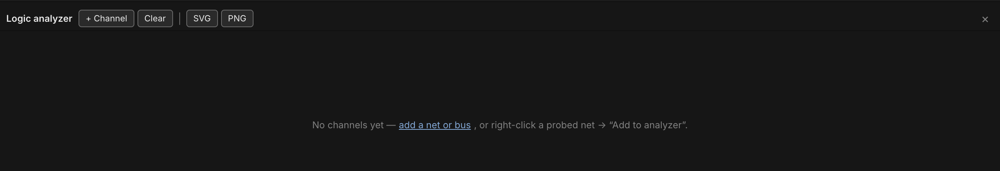

Logic Analyzer & Timing
The Analyzer is a bottom-docked panel that records the live simulation and draws it as a scrolling timing diagram — one lane per signal you've chosen to watch, a step waveform for a single net or a hex value-lane for a bus, with two draggable cursors for measuring the time between two points. It's a passive recorder: it reads the same broadcast the LEDs and chip badges already render from, so opening it, closing it, or adding channels never changes how the circuit behaves.

Opening the analyzer
Click Analyzer in the toolbar, or press Cmd/Ctrl+A, to dock the panel
along the bottom of the window. Click the button again, press the shortcut
again, or click the panel's × to close it — the panel remembers whether
it was open and how tall you left it (drag its top edge to resize, from a
compact strip up to half the window).
With no channels added yet, the panel shows a prompt instead of an empty grid: add a net or bus, or right-click a probed net and choose Add to analyzer.
Adding a channel
There are two ways to add a channel:
- From the panel — click + Channel in the header. The menu lists every named net (see Probing & Net Names) and every bus in the document that isn't already on a channel; picking one adds it.
- From the probe tool — arm the probe (
I), right-click any net on the desk, and choose Add to analyzer. This works on ANY net the probe can reach, named or not — it's the way to watch a signal you haven't bothered to name. Using it also opens the panel automatically if it was closed.
Each channel gets a row in the left-hand gutter: a color dot (cycled from a
fixed palette unless the channel has its own color), the net or bus name,
its current value, and three small controls — ↑ / ↓ to reorder the
channel, and × to remove it. Channels are saved with the document
(doc.scopeChannels), so a schematic reopens with its analyzer setup
intact, and adding/removing/reordering a channel rides the normal undo/redo
stack. A channel that loses its target (the net was deleted, the bus was
removed) simply reads as undriven rather than disappearing — it comes back
to life if the target returns.
Reading a waveform
A single-bit channel (a net) draws as a step waveform inside its lane:
- High traces along the top of the lane, Low along the bottom.
- Floating (Z) draws a dashed line through the lane's midline.
- Unknown/conflict (X) — including anywhere the net is undriven — fills the region with a diagonal amber hatch instead of a line.
The gutter's value column always shows the channel's current level (or its value at cursor A, once one is placed — see below).
Multi-bit (bus) lanes
A channel bound to a bus (see Wiring, Nets & Buses) doesn't
draw a two-level waveform — decoding eight or sixteen individual traces
would be unreadable. Instead it draws a value-lane: a band that necks
down to a point at every change and displays the bus's current value as
hex (0x1A, uppercase) centered in the band, wide enough for the label to
fit. The bus is decoded from its member wires' bit positions (as parsed
from a name like D[7:0]); if even one member is floating or unknown, the
whole word is undecodable for that span and the lane hatches just like an
unknown net.
Cursors & Δ
Click anywhere in the waveform area to drop cursor A at that tick;
Shift-click to drop cursor B. Drag either cursor to slide it to a
different tick — the gutter's value column updates to show each channel's
value at cursor A while it's placed. With only cursor A down, the header
reads t=<tick>; with both down, it reads the delta between them —
Δ N ticks, plus a millisecond figure when a clock source on the desk
gives the analyzer a time base to convert against.
While the simulation is running, the view auto-scrolls to keep the newest tick in sight; scrolling the lanes away from the right edge turns this "follow" behavior off until you scroll back. Clear in the header wipes the recorded trace and both cursors without touching the channel list; starting a fresh Run does the same automatically.
Export
Two buttons in the header export the diagram exactly as currently rendered — every channel, the full retained trace, and a label column identifying each lane:
- SVG — downloads a self-contained
timing.svg(colors resolved to concrete values, not the app's live CSS variables, so it renders correctly outside Chip Hippo). - PNG — rasterizes that same SVG at 2× scale and downloads it as
timing.png.
Both are plain browser downloads (no file dialog, no IPC round-trip) and do nothing if there are no channels or nothing has been recorded yet.
See also
- Probing & Net Names — arming the probe, naming a net, and the "Add to analyzer" context-menu entry.
- Wiring, Nets & Buses — laying the buses a bus channel decodes.